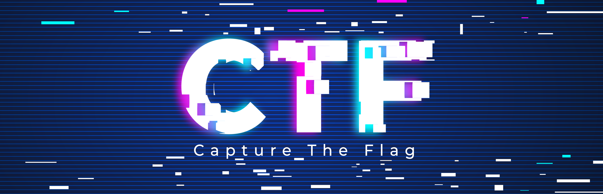
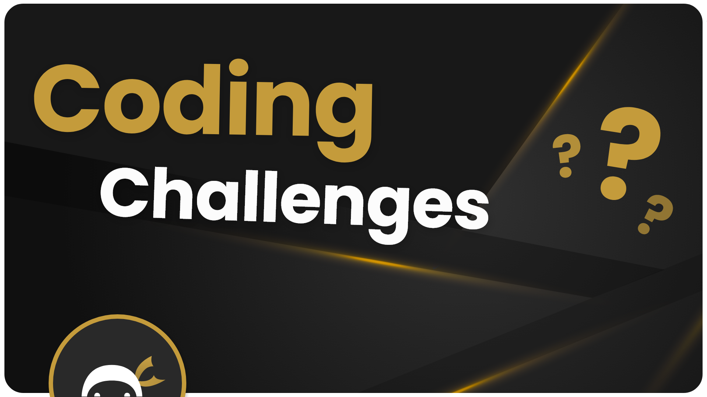
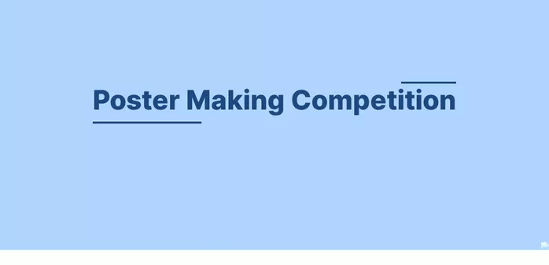
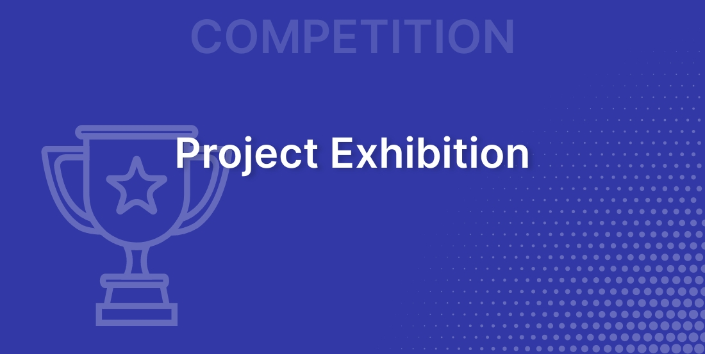

AR/VR

Mode: Offline
Event Date : 04/04/23
Event Time : 9.00 am to 2.30pm
Venue : Class Room
Registration Fee : 200
Description
Content for AR & VR workshop:
Morning Session: Introduction to AR & VR, Different tools of 3D
Afternoon session: Installation of Blender, Unity & Unity Interface, Different use cases of AR and VR
Resource Person:
Dr. Partheepan Rudrapati, CEO - Knowledge Xchange Community & Academic2IT, Entrepreneur & Industry Solutions Architect
Rules
Minimum System Requirements:
Mobile Device:
○ Android
Processor ARMv7 (Cortex family) or later
GPU: Must support OpenGL ES 2.0 or 3.x
OS: Android 6.0+ (API 23), 7.0+ (API 24) recommended
Rear-facing camera
○ IOS
OS: iOS 11+
XCode 9.4 or higher
Unity requires iOS 11 or higher, and doesn’t support earlier versions. Thismeans that you MUST use an iPhone 5s or better, as iOS 11 does notsupport any phone before that.
Computer
OS:
Windows 7+ or Windows 10, 64-bit versions only.
Mac OS X Sierra 10.12.6+ or later
Experimental Ubuntu support is available, however, minimum Editorrequirements are not provided by Unity. Ubuntu 20.04, Ubuntu 18.04, orCentOS 7 is required to run Unity-built applications for Linux.
GPU: DX10, DX11, and DX12-capable GPUs.
(Optional) USB Webcam: Will allow you to debug Vuforia applications on yourcomputer using play mode in Unity
Faculty Coordinator
Name : Dr.Vidyasagar ( resource person Dr.R.Parthipan)
Student Coordinator
Name : Aparna J
Department: CSE
Year: 3rd year
Contact:7894563256
HACKATHON

Mode: hybrid
Event Date : 04/04/23
Event Time : 10.00 am to 4.00pm
Venue :
Registration Fee : Team - Rs.200(Max 4/team)
Description
Machine learning hackathon event with diverse problem statements for teams to choose from, encouraging innovation and impact. Finalists will present their projects on the event day and be evaluated based on creativity, feasibility, and impact.
Participants are required to select one of the three domains and develop innovative ML solutions to address specific challenges in their chosen domain.
The three domains are:
>Personalized Learning
>Smart City
>Healthcare
For the Personalized Learning domain, participants will develop ML solutions that can analyze data from various sources to tailor learning content and teaching methods to individual students' needs, preferences, and abilities. Personalized learning can help students achieve better academic outcomes and engagement.
For the Smart City domain, participants will focus on using machine learning to optimize urban services and make cities more efficient, sustainable, and livable. This involves developing algorithms that can analyze data from various sources such as transportation, energy consumption, waste management, and public safety to improve these services.
In the Healthcare domain, participants will work on developing algorithms that can analyze medical data to improve diagnosis, prediction, treatment, and drug discovery. Machine learning can help healthcare providers personalize treatment plans and make more informed decisions, leading to better patient outcomes.
Rules
Team Size : 4 members
Proposal submission deadline: 03/04/2023
Proposal evaluation criteria: Creativity, feasibility, relevance to the problem statement
Presentation and evaluation: On the day of the hackathon, teams will present their projects to judges and participants. Evaluation criteria include originality, creativity, feasibility, technical implementation, and impact. Judges will provide feedback and select winners based on scores.
For further queries, contact us: mlxlr8hackathon@gmail.com
Faculty Coordinator
Name : D.Sasikala
Student Coordinator
Name : Varsha P
Department: AIE
Year: 3rd-year
Contact:9896236589
CAPTURE THE FLAG

Mode: Online
Event Date : 03/04/23
Event Time : 4:00pm to 11:30pm
Venue :
Registration Fee : Team Rs.100 ( Max: 4/team)
Description
It is a jeopardy style CTF ( The well-known Cybersecurity Competition to Capture The Flag).
Participants around the world would test their cybersecurity knowledge in various domains (Web Exploitation detecting vulnerabilities ,Digital Forensics and Incident Response, Reverse Engineering Skill, Cryptography, Binary Exploitation, etc).
Teams can gain points for every solved task on various domains.
Points vary according to the complexity of tasks.
Rules
Do not brute force, perform denial of service or attack the platform.
Do not share flags nor send/post any kind of hints.
Do not use the machines to perform any malicious activities.
Do not hack any service except the intended ones.
Each task in the event will include instructions on interacting with the practical material. Please follow them carefully!
Faculty Coordinator
Name : Dr.Velusamy
Name : Dr.Mathivanan
Student Coordinator
Name : Prathunan K.K
Department: CYS
Year: 2nd-year
Contact: 8610185441
CODING CHALLENGES

Mode: Offline
Event Date : 03/04/23
Event Time : 10.00 am to 12.30pm
Venue : Intel AI lab
Registration Fee : Team - Rs 150(Max 4/team)
Description
Colay is a thrilling code relay event that will test the participants' coding skills and teamwork.
Colay is a thrilling code relay event that will test the participants' coding skills and teamwork.
The event will consist of 10 teams, each with 4 participants. The objective of the event is to complete the given computer programming problems, with each participant taking turns to work on the code for a fixed period of time before passing the task on to the next member of their team.
The team that completes all three problems and produces the correct outputs in the fastest time will be declared the winner of the event, with the second-fastest team earning the runner-up position.
Rules
To ensure fair play, the following rules will be in place for the event:
Each team will be given a maximum of 5 minutes to discuss and plan their strategy before the event starts.
Each participant will be given a maximum of 5 minutes to work on the code.
Participants must switch places with their team members once their allotted time has elapsed, and cannot continue working on the code till their next turn.
Participants may not use external resources such as the internet or other code libraries during the event.
The team that completes all three problems and produces the correct outputs in the fastest time will be declared the winner.
Faculty Coordinator
Name : Annamalai R
Student Coordinator
Name : Venkatakrishnan R
Department: AIE
Year: 3rd year
Contact: 8248477584
POSTER PRESENTATION

Mode: Offline
Event Date : 3rd April 2023
Event Time : 10:00AM - 1:00PM
Venue : VLSI LAB
Registration Fee : UG - Rs.100 Per person PG - Rs.150 Per person
Description
Should include all the details of the work. The poster should be easily readable at a distance of two meters. Use Sentence case for the text on the poster Usage of only two FONT styles of their choice is permitted. The posters can be from any engineering domain.
Poster Presentation is an individual event.
The event will be held offline where the participants are requested to visit the campus.
The participants have to present their poster for 5-7 minutes to the jury members.
Based on the marks awarded by the jury the winners will be announced.
Rules
https://acsha.vercel.app/
Faculty Coordinator
Name : Dr. C. Ganesh Kumar
Name : Dr. Sakthi Abirami B
Student Coordinator
Name : G. Anuradha Reddy
Department: Ece
Year: 4th year
Contact: 8688450467
PROJECT EXHIBITIONS

Mode: Offline
Event Date : 04/04/23
Event Time : 9.30 am to 1.30pm
Venue : Classroom/prayer hall
Registration Fee : 100
Description
Basic knowledge, skill set, ethics and attitude related to computational problem solving to be exhibited and demonstrated.
Rules
Team size max 5, the project must be unique, novel, demonstratable, logically explainable, ethically feasible and have societal impact.
Faculty Coordinator
Name : Dr. Natarajan
Name : Dr.Rajati
Student Coordinator
Name : Arun kaarthic T P
Department: CSE
Year: 2nd year
Contact: 7010707517